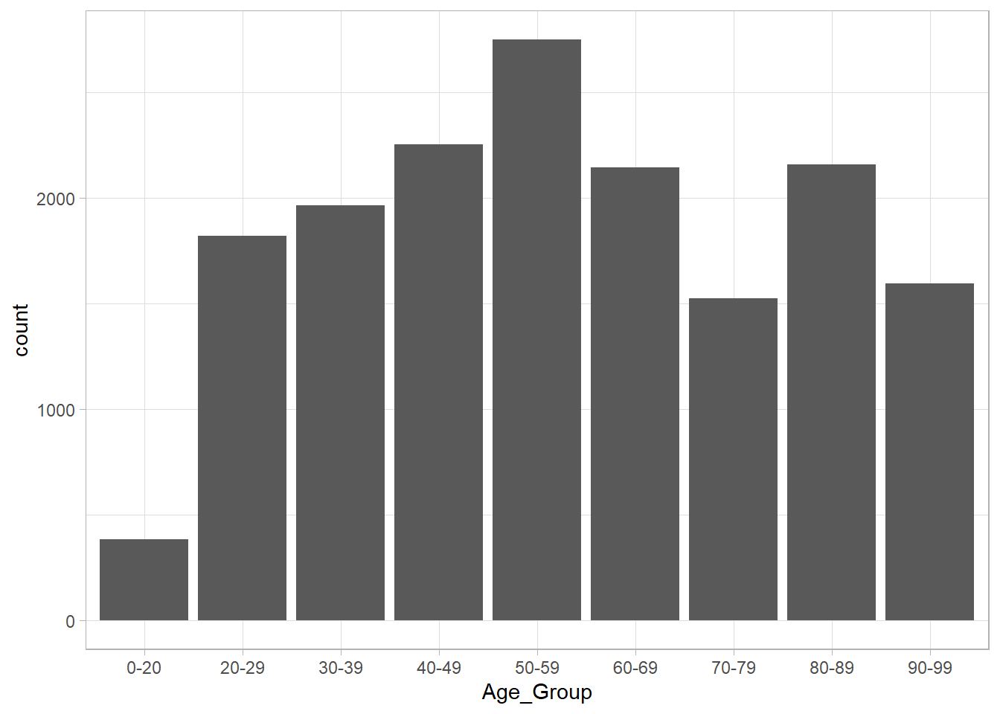
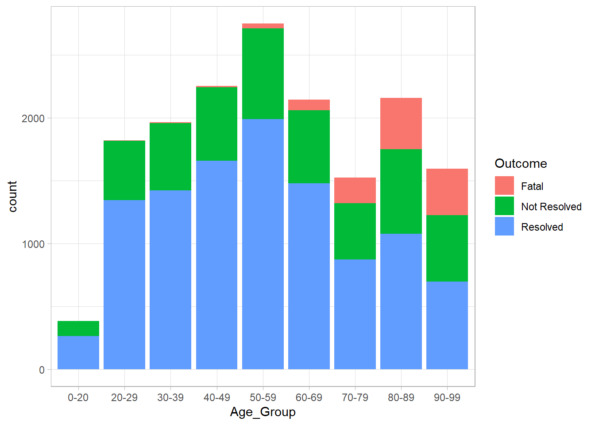
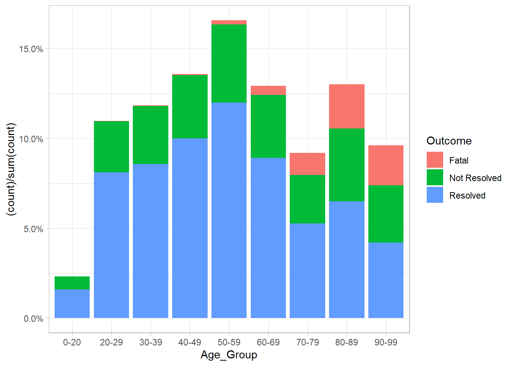
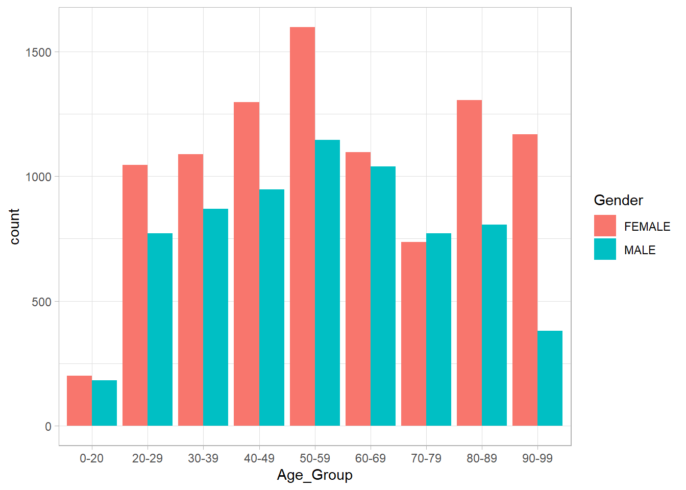
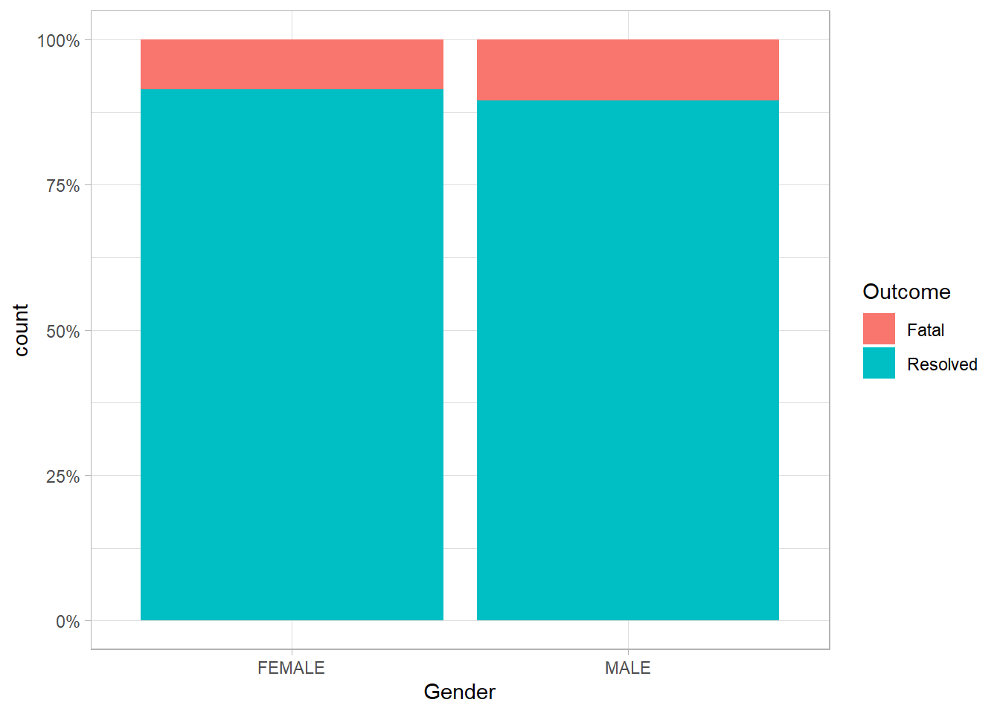
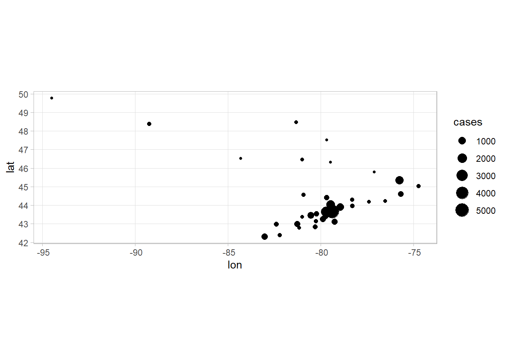
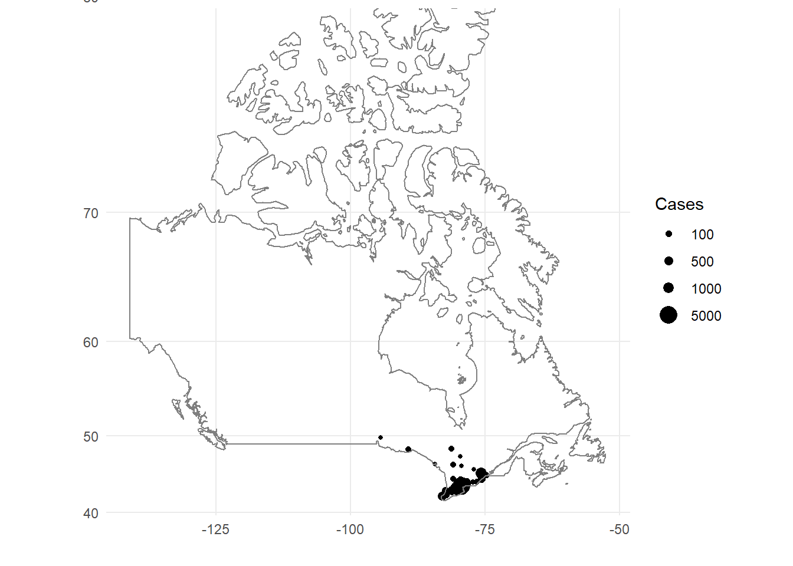
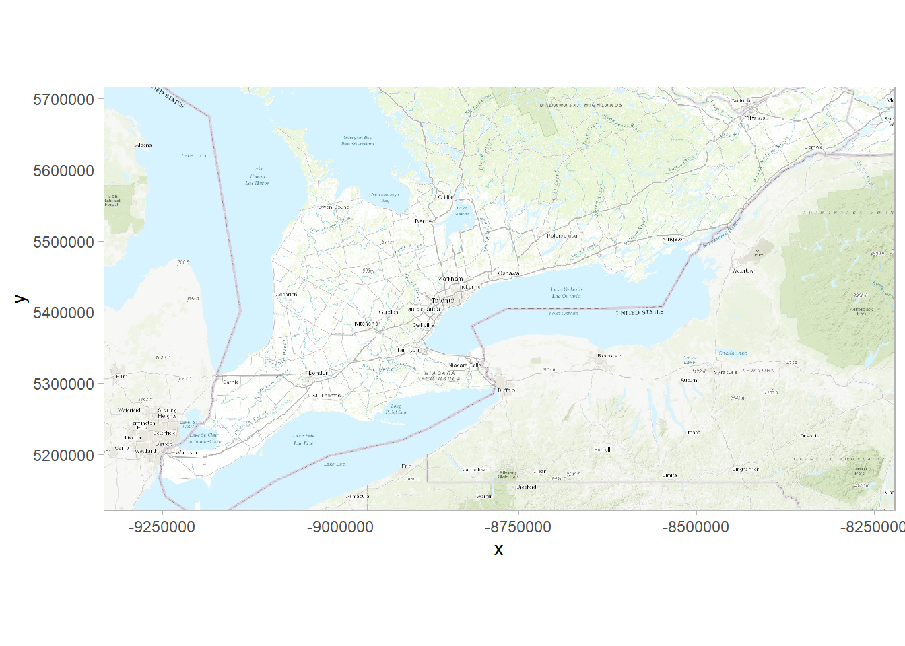
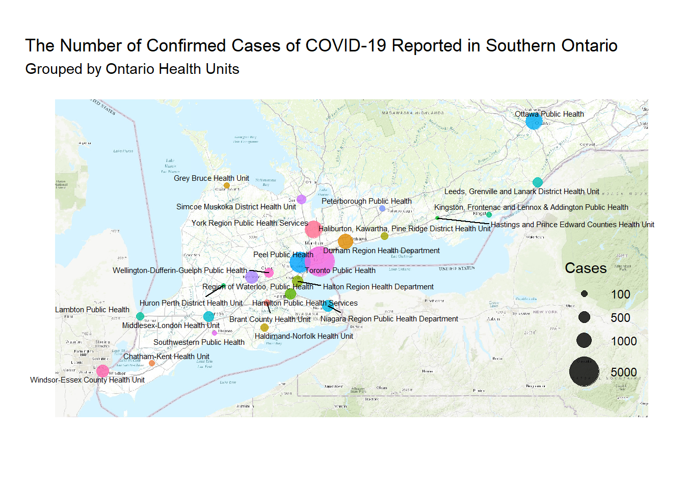

library(tidyverse)
library(maps)
library(sf)
library(mapproj)
library(OpenStreetMap)
library(ggrepel)
library(ggmap)
library(scales)Let’s load the data from the website: https://data.ontario.ca/dataset/confirmed-positive-cases-of-covid-19-in-ontario/resource/455fd63b-603d-4608-8216-7d8647f43350?view_id=95311e17-8314-42a7-82ae-05b55c839659, which allows us to download a list of confirmed cases.
I have already downloaded the files and put them in your working directory in Rstudio.cloud. Let’s go through the cases as we look and inspect the file with the glimpse() command to get a sense of its structure.
ont_cases <- read_csv("ontario_covid_cases.csv")
ont_cases %>%
glimpse()## Observations: 16,608
## Variables: 14
## $ `_id` <dbl> 1, 2, 3, 4, 5, 6, 7, 8, 9, 10, 11, 12, 13...
## $ Row_ID <dbl> 1, 2, 3, 4, 5, 6, 7, 8, 9, 10, 11, 12, 13...
## $ Accurate_Episode_Date <dttm> 2020-01-22, 2020-01-21, 2020-01-24, 2020...
## $ Age_Group <chr> "50s", "50s", "20s", "20s", "60s", "60s",...
## $ Client_Gender <chr> "FEMALE", "MALE", "FEMALE", "FEMALE", "FE...
## $ Case_AcquisitionInfo <chr> "Travel-Related", "Travel-Related", "Trav...
## $ Outcome1 <chr> "Resolved", "Resolved", "Resolved", "Reso...
## $ Reporting_PHU <chr> "Toronto Public Health", "Toronto Public ...
## $ Reporting_PHU_Address <chr> "277 Victoria Street, 5th Floor", "277 Vi...
## $ Reporting_PHU_City <chr> "Toronto", "Toronto", "London", "Toronto"...
## $ Reporting_PHU_Postal_Code <chr> "M5B 1W2", "M5B 1W2", "N6A 5L7", "M5B 1W2...
## $ Reporting_PHU_Website <chr> "www.toronto.ca/community-people/health-w...
## $ Reporting_PHU_Latitude <dbl> 43.65659, 43.65659, 42.98147, 43.65659, 4...
## $ Reporting_PHU_Longitude <dbl> -79.37936, -79.37936, -81.25402, -79.3793...We can also use the summary() command to get a sense of the data and describe some of the features we see. This gives a quick look at the basic elements and features of the data. For instance, we can see that when an variable is coded as a character datatype, it does not give us much insight in terms of grouping, so we’ll need to make some changes to the data type of many of the variables.
ont_cases %>%
summary()## _id Row_ID Accurate_Episode_Date
## Min. : 1 Min. : 1 Min. :2020-01-01 00:00:00
## 1st Qu.: 4153 1st Qu.: 4153 1st Qu.:2020-03-28 00:00:00
## Median : 8304 Median : 8304 Median :2020-04-08 00:00:00
## Mean : 8304 Mean : 8304 Mean :2020-04-06 04:03:02
## 3rd Qu.:12456 3rd Qu.:12456 3rd Qu.:2020-04-16 00:00:00
## Max. :16608 Max. :16608 Max. :2020-04-30 00:00:00
## Age_Group Client_Gender Case_AcquisitionInfo Outcome1
## Length:16608 Length:16608 Length:16608 Length:16608
## Class :character Class :character Class :character Class :character
## Mode :character Mode :character Mode :character Mode :character
##
##
##
## Reporting_PHU Reporting_PHU_Address Reporting_PHU_City
## Length:16608 Length:16608 Length:16608
## Class :character Class :character Class :character
## Mode :character Mode :character Mode :character
##
##
##
## Reporting_PHU_Postal_Code Reporting_PHU_Website Reporting_PHU_Latitude
## Length:16608 Length:16608 Min. :42.31
## Class :character Class :character 1st Qu.:43.65
## Mode :character Mode :character Median :43.66
## Mean :43.82
## 3rd Qu.:43.97
## Max. :49.77
## Reporting_PHU_Longitude
## Min. :-94.49
## 1st Qu.:-79.71
## Median :-79.38
## Mean :-79.40
## 3rd Qu.:-79.38
## Max. :-74.74You can see that the structure has all character data types, so we should recode these character types as factors so that we can more easily manipulate the data. Fortunately, this data is already tidy because each row represents one observation (case) of COVID-19 and we won’t need to do much in terms of tidying, but we’ll need to do some basic data cleaning so that we have nicer data to work with.
ont_cases_clean <-
ont_cases %>%
mutate_at(vars(Age_Group, Client_Gender, Reporting_PHU, Case_AcquisitionInfo, Outcome1), as.factor) %>%
# Change the selected vars to Factors to more easily work with them
mutate(Age_Group = fct_recode(Age_Group,
"0-20" = "<20",
"20-29" = "20s",
"30-39" = "30s",
"40-49" = "40s",
"50-59" = "50s",
"60-69" = "60s",
"70-79" = "70s",
"80-89" = "80s",
"90-99" = "90s",
"NA" = "Unknown"
) # Recode the Factors for Ages
) %>%
filter(Age_Group != "NA") %>% # Remove the 7 Unknown Age_Group
mutate(lat = Reporting_PHU_Latitude,
lon = Reporting_PHU_Longitude) %>% # Create a Lat and Lon Variable
mutate(Outcome = Outcome1,
Gender = Client_Gender) %>%
select(-`_id`,-Outcome1, -Client_Gender, -Reporting_PHU_Address:-Reporting_PHU_Longitude) # Remove the Variables not neededNow that we have cleaned the data, let’s take a look at some basic elements of the data using some summaries and some plotting. Now that we made variables into factors, we are in good shape to examine the outputs in more detail.
ont_cases_clean %>%
summary()## Row_ID Accurate_Episode_Date Age_Group
## Min. : 1 Min. :2020-01-01 00:00:00 50-59 :2750
## 1st Qu.: 4152 1st Qu.:2020-03-28 00:00:00 40-49 :2254
## Median : 8305 Median :2020-04-08 00:00:00 80-89 :2158
## Mean : 8305 Mean :2020-04-06 04:04:47 60-69 :2146
## 3rd Qu.:12458 3rd Qu.:2020-04-16 00:00:00 30-39 :1965
## Max. :16608 Max. :2020-04-30 00:00:00 20-29 :1821
## (Other):3507
## Case_AcquisitionInfo
## Contact of a confirmed case:3396
## Information pending :6105
## Neither :5897
## Travel-Related :1203
##
##
##
## Reporting_PHU lat lon
## Toronto Public Health :5039 Min. :42.31 Min. :-94.49
## Peel Public Health :2345 1st Qu.:43.65 1st Qu.:-79.71
## York Region Public Health Services:1523 Median :43.66 Median :-79.38
## Ottawa Public Health :1372 Mean :43.82 Mean :-79.40
## Durham Region Health Department : 963 3rd Qu.:43.97 3rd Qu.:-79.38
## Region of Waterloo, Public Health : 694 Max. :49.77 Max. :-74.74
## (Other) :4665
## Outcome Gender
## Fatal : 1121 FEMALE :9533
## Not Resolved: 4662 MALE :6915
## Resolved :10818 OTHER : 2
## TRANSGENDER: 2
## UNKNOWN : 149
##
## We can go a little further in future anaysis to create some other grouping with the factors due to some small cases in some of the groups. The summary is a great place to start, though. So, let’s take a look at distributions of age for these cases across Ontario. These plots will be quick and dirty. Hopefully the code is intutive also.
I will walk us through the first part of the data to show how R thinks about individual observations of data. Then, I will use a different function that has this built in to it.
ont_cases_clean %>% #Start with the Clean Data
group_by(Age_Group) %>% #We want to group by the Age group of the case
summarise(n = n()) %>% #Use the Summarize Function with the n() function to count how many people are in each group
ggplot(aes(x = Age_Group, y = n))+ # Create a plot later that has Age on x and count on y
geom_col() # Make this a column plotThe same plot a different way. The geom_bar() function uses the stat = count() at its core, so we don’t need to create a summary before plotting. This is useful when your data is already tidy.
ont_cases_clean %>%
ggplot(aes(x = Age_Group))+
geom_bar()
Let’s see if we can find some relationships between some of the variables. Let’s see if the outcome varies much with the age groups. We can look at this by count and by percent.
ont_cases_clean %>%
ggplot(aes(x = Age_Group, fill = Outcome))+
geom_bar()
ont_cases_clean %>%
ggplot(aes(x = Age_Group, fill = Outcome))+
geom_bar(aes(y = (..count..)/sum(..count..)))+
scale_y_continuous(labels = percent_format())+
labs(x = "Age Group",
y = "Percent of Cases",
title = "The Number of COVID-19 Cases by Age Group",
subtitle = "Colour Indicates Outcome")+
theme_light()
Firstly, with gender, we will need to remove the 2 others, the 2 transgender, and the 149 unknowns. Then, we’ll look at the data in a side-by-side bar chart.
ont_cases_clean %>%
filter(Gender %in% c("MALE", "FEMALE")) %>%
ggplot(aes(x = Age_Group, fill = Gender))+
geom_bar(position = "dodge")+
theme_minimal()+
labs(x = "Age Group",
y = "Count",
title = "The Number of COVID-19 Cases in Ontario by Gender",
subtitle = "Colour Indicates Gender")
Let’s wonder, what does this reveal about the confirmed cases in Ontario?
I wonder if maybe there is a relationship between whether cases have been fatal more often in men or women bases on the data. Note, we’re only looking at cases that are have been resolved in one way or another.
ont_cases_clean %>%
filter(Gender %in% c("MALE", "FEMALE")) %>%
filter(Outcome != "Not Resolved") %>%
ggplot(aes(x = Gender, fill = Outcome))+
geom_bar(position = "fill")+
scale_y_continuous(labels = percent_format())
Something that I haven’t tried to yet is create a map using the R software, so it was exciting to create a map using the Open Street Maps package. Unforunatey, only some countries have maps built into the regular r packages, and I couldn’t find a map of Ontario very easily.
To start, let’s look at a basis map of the lat and lon coordinates in a scatter plot. In order to do that, we need to summarize the data by the lat and lon coordinates of the reporting Ontario Health Units. This new data will count all the cases processed at the health unit and keep the lat and lon coordinates of each of the health units for a map.
ont_cases_loc <-
ont_cases_clean %>% # Start with our cleaned data
group_by(Reporting_PHU) %>% # Group each case by the Health Unit
summarise(cases = n(), # Count How many cases at each unit using n()
lat = mean(lat), # create a variable lat (note that I needed to use mean because it aggregates all the data)
lon = mean(lon) # create a variable lon (note that I needed to use mean because it aggregates all the data)
) %>%
ungroup() # Ungroups the data to make it a data class rather than grouped data
ont_cases_loc %>%
arrange(desc(cases))## # A tibble: 34 x 4
## Reporting_PHU cases lat lon
## <fct> <int> <dbl> <dbl>
## 1 Toronto Public Health 5039 43.7 -79.4
## 2 Peel Public Health 2345 43.6 -79.7
## 3 York Region Public Health Services 1523 44.0 -79.5
## 4 Ottawa Public Health 1372 45.3 -75.8
## 5 Durham Region Health Department 963 43.9 -78.9
## 6 Region of Waterloo, Public Health 694 43.5 -80.5
## 7 Windsor-Essex County Health Unit 589 42.3 -83.0
## 8 Niagara Region Public Health Department 485 43.1 -79.2
## 9 Halton Region Health Department 458 43.4 -79.7
## 10 Hamilton Public Health Services 425 43.3 -79.9
## # ... with 24 more rowsThe only map that I could find built into R was a map of Canada. This would be helpful if I could filter it by province, but alas, I can’t get any more detailed than regions = Canada.
Essentialy what I need to do is map a scatterplot onto a map. Here’s a scatterplot function using geom_point() and the geom_sf() function is used to keep the map coordinates in perspective.
ggplot()+
geom_point(data = ont_cases_loc, aes(x = lon, y = lat, size = cases))+
geom_sf()
Here is the output of a map of Canada.
ont_cases_loc %>%
ggplot(aes(x = lon, y = lat, size = cases))+
geom_point()+
coord_map()+
borders(database = "world", regions = "canada")+
theme_minimal()+
scale_size(name = "Cases", breaks = c(100, 500, 1000, 5000), range = c(1, 5))+
labs(x = "", y = "")
We will create an object that pulls from the Open Street Map database to plot the points on. We will call the object OSM_South_Ont to represent Southern Ontario for our plot.
OSM_South_Ont <- openmap(c(41.73, -83.84), c(45.6, -73.85), type = "esri-topo")Once, we assign the map to an object, we can use the ggplot() function to plot it. As with any ggplot(), we can add layers onto the plot to create a map of the amount of cases that are seen at each Provincial Health Unit.
Here is the layer that we will build our plot on.
autoplot(OSM_South_Ont)
One of the drawbacks of the OSM Map is that the latitude and longitude coordinates are enlarged in their scales, so the actual latitude and longitude coordinates do not match the map. This is a drawback of the OSM Maps, but it’s possible to convert the actual latitude and longitude into coordinates that match up with the OSM Map.
Let’s work through that by scaling the coordinates in ont_cases_loc data while preserving the Reporting Health Units. We can scale these coordinates using the projectMercator() function in the OpenStreetMaps package.
osm_plot <- as.data.frame(projectMercator(ont_cases_loc$lat, ont_cases_loc$lon)) #this takes the lat and lon coordinates as converted and puts them into a data frame to use to plot. We will then add onto it.
osm_plot %>%
head(3)## x y
## 1 -9385885 5866077
## 2 -8936102 5335108
## 3 -9151415 5221669By inspecting this, we see the function has created an x and y coordinate for the latitude and longitude inputs we gave them. They’re also in order of the Reporting Health Units. This is impotant so that we can preserve the proper Health Unit with the correct coordinates.
Now, we’ll add new variables using the mutate function (transmute) to create the other elements of the dataframe we’re going to plot and remove the old x and y coordinates. The transmute function removes the variables we don’t specify.
osm_plot %>%
transmute(lat = x,
lon = y,
health_unit = ont_cases_loc$Reporting_PHU,
cases = ont_cases_loc$cases) -> osm_plot_RHU
osm_plot_RHU %>%
head(3)## lat lon health_unit cases
## 1 -9385885 5866077 Algoma Public Health Unit 13
## 2 -8936102 5335108 Brant County Health Unit 102
## 3 -9151415 5221669 Chatham-Kent Health Unit 83Now that we have the Reporting Heath Units with coordinates that scale to the map, we are ready to make our plot.
First, though, we need to remove some of the Reporting Health Units that are outside of our Southern Ontario map boundaries. (Sorry for those from this area!). We’ll create a dataframe that filters those Health Units that are outside the boundaries of the plot.
osm_plot_RHU_South <-
osm_plot_RHU %>%
filter(lon < 5700000) %>%
filter(lat < -8400000)autoplot(OSM_South_Ont)+
geom_point(data = osm_plot_RHU_South, aes(x = lat, y = lon, size = cases, colour = health_unit), alpha = .8)+
scale_x_continuous(breaks = NULL)+
scale_y_continuous(breaks = NULL)+
scale_color_discrete(guide = FALSE )+
scale_size(name = "Cases", breaks = c(100, 500, 1000, 5000), range = c(1, 10))+
labs(x = "",
y = "",
title = "The Number of Confirmed Cases of COVID-19 Reported in Southern Ontario",
subtitle = "Grouped by Ontario Health Units")+
geom_text_repel(data = osm_plot_RHU_South, aes(x = lat, y = lon, label = health_unit), size = 2)+
theme_minimal()+
theme(legend.justification = c(1,0), legend.position = c(.95,.1))